1.1 - Découvrez le système de gestion de base de données (SGBD) -
Découvrez votre mission dans ce cours
Dans ce cours, nous allons créer ensemble une base de données (BDD) pour une application imaginaire, Foodly.
Cette application permet à des internautes de sélectionner les aliments qu’ils souhaitent acheter pour voir leur composition en protéines, graisses, sucres, etc.
J’utiliserai tout au long du cours l'abréviation BDD pour base de données.
Vous découvrirez quelques autres abréviations que je vous expliquerai au fur et à mesure, mais c’est surtout celle-ci que vous devez retenir pour l’instant !
La BDD de Foodly va donc stocker les données dont l’application a besoin pour fonctionner, à savoir :
les utilisateurs inscrits ;
les aliments disponibles.
Chacune de ces données aura des caractéristiques, comme l’e-mail pour l’utilisateur ou les calories pour les aliments.
Nous allons les voir par la suite.
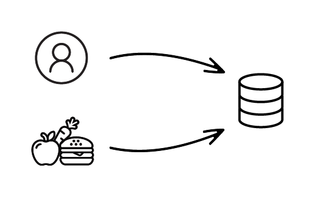
Les données utilisateur et aliment à stocker dans la BDD Foodly
À la fin de ce cours, vous aurez créé plusieurs utilisateurs en base, de nombreux aliments, ainsi qu’un moyen de lier les utilisateurs aux aliments qu’ils ont achetés.
Avant de mettre les mains dans le cambouis, on doit passer par une partie pas forcément plaisante, mais indispensable : le choix et l’installation de notre système de gestion de bases de données.
Car sans lui, pas de BDD.
Installer des logiciels sur son ordinateur n’est pas la chose la plus drôle.
Pour avoir dû installer deux fois d’affilée toutes les librairies (petits programmes qui nous permettent de coder) sur mon ordinateur professionnel, après me l’être fait voler, je peux vous l’assurer, personne n’aime ça.
Je vous promets de faire au mieux pour rendre cela plaisant et aller droit au but.
Votre objectif une fois cette partie finie : être capable de choisir votre système de gestion de base de données et de l’installer.
Choisissez votre SGBD
Le SGBD est le logiciel qui va vous permettre de manipuler les données d’une base.
C’est ce logiciel qui commande les interactions avec votre base pour y récupérer, ajouter, modifier ou supprimer des données.
Pour échanger avec votre base, vous allez donc donner des ordres à votre SGBD.
Des ordres en français ?
Pas exactement !
Ces ordres, vous allez les lui donner dans un langage très simple : le langage SQL.
Pas d’inquiétude, on va avancer pas à pas ensemble pour que vous puissiez prendre en main ce langage !
Le SQL, abréviation de Structured Query Language (en français, langage de requête structurée), est un langage informatique qui vous permet d'interagir avec vos bases de données.
C’est le plus répandu ; par conséquent il est indispensable de le connaître.
On va donc s’en servir pour gérer notre base de données pour la suite du cours.
Imaginez qu’un utilisateur arrive sur Foodly.
Il scanne un aliment présent dans son supermarché pour connaître ses caractéristiques nutritionnelles.
Que va faire notre application ?
L’application va traduire cette recherche en SQL et l’envoyer au SGBD, qui va récupérer l’aliment en question dans le stockage de la base de données, pour ensuite le redonner à l’application.
L’utilisateur retrouvera ainsi son aliment avec toutes ses caractéristiques.
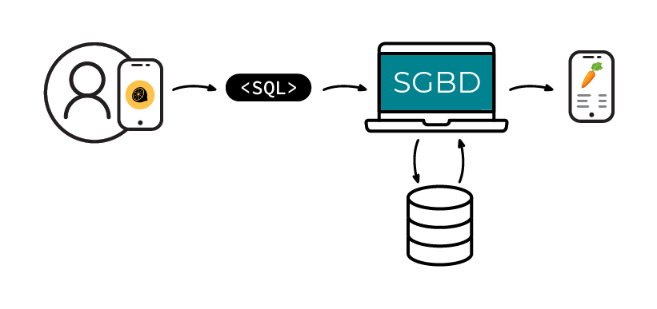
La relation entre le langage SQL et le SGBD lors d'une action sur l'application
Chaque SGBD implémente sa propre syntaxe du SQL en plus des normes communes à tous.
Vous vous demandez sûrement pourquoi il existe différents SGBD et comment en choisir un plutôt qu’un autre.
C’est exactement ce que je vais vous expliquer dans la suite de ce chapitre.
Découvrez les différents SGBD
MySQL MySQL est le plus connu des SGBD .
C’est le plus utilisé, car il était (auparavant) open-source (ce qui veut dire que son code et son utilisation étaient gratuits).
J’insiste sur le “auparavant”, car MySQL a depuis été racheté par Oracle Corporation, et n’est plus open-source.
Néanmoins, il en existe une “copie” open-source appelée MariaDB, qui suit les mêmes règles de langage que MySQL (et que je vous recommande).
MySQL est surtout connu pour être le SGBD utilisé par les sites WordPress, ce qui a fait grandement augmenter sa popularité.
Malgré cette popularité, c’est un peu la “tête de mule” des SGBD.
Il ne suit pas rigoureusement la syntaxe préconisée par le SQL.
Il est aussi parfois trop “permissif” sur les requêtes SQL, provoquant des erreurs.
Mais c’est un SGBD robuste, qui fonctionne très bien, même sur de grandes quantités de données !
Par exemple, c’était pendant longtemps le seul SGBD utilisé par Facebook.
Oracle Database Oracle est le SGBD édité par Oracle Corporation .
C’est très cher, mais utile pour traiter un très gros volume de données.
Du coup, ce sont presque exclusivement les grandes entreprises qui l’utilisent.
Mais même en entreprise (il est par exemple utilisé par Samsung), Oracle tend à se faire rattraper par les SGBD open-source type MariaDB ou PostgreSQL.
Il est en réelle perte de vitesse sur le marché.
PostgreSQL PostgreSQL est “l’autre” grand SGBD open-source disponible sur le marché. .
Moins utilisé que MySQL car longtemps confiné au monde linuxien (système d’exploitation Linux), et plus obscur aux yeux des débutants.
Mais c’est en train de changer car c’est le SGBD qui suit le plus les recommandations du SQL, ainsi que le plus rapide (ces dernières années).
Il est notamment utilisé par Instagram ou par Spotify.
SQLite SQLite c’est le “petit frère”. Mais petit ne veut pas dire moins puissant, bien au contraire. .
À l’instar des autres SGBD, SQLite stocke toute la base de données dans un seul et unique fichier.
Peu propice à l’utilisation sur un grand nombre de données, c’est un SGBD très simple à configurer et qui “ne prend pas la tête”.
C’est d’ailleurs le SGBD qu’on utilise quand on développe une base de données “en local” (sur son ordinateur), alors qu’une fois “en production” (sur un serveur spécifique généralement utilisé par votre entreprise ou vos clients), on va utiliser MySQL ou PostgreSQL.
C’est aussi le SGBD utilisé par vos applications Android (par exemple pour vos films Netflix en mode hors-connexion) pour stocker de la donnée !
Pour vous aider, voici un tableau récapitulatif des forces et faiblesses de chaque SGBD :
MySQL
Oracle Database
PostgreSQL
SQLite
Popularité
très répandu
Utilisé par les grands groupes ayant un grand nombre de données
moins répandu que les autres
répandu pour le prototypage
Prix
gratuit (licence fermée)
très cher (licence fermée)
gratuit (open-source)
gratuit (open-source)
Similarité avec le langage SQL
ne suit pas toujours la syntaxe SQL
ne suit pas toujours la syntaxe SQL
suit la syntaxe SQL de très près
suit la syntaxe SQL de très près
Entreprises utilisatrices
utilisé par Facebook
utilisé par Samsung
utilisé par Spotify
utilisé pour les apps Android
En résumé
Le langage SQL sert à communiquer entre votre application et votre base de données.
Mais c’est le SGBD qui récupère la commande en SQL pour en sortir de la donnée depuis la base.
MySQL est un système de gestion de bases de données (SGBD).
C’est même le plus répandu sur le marché.
Je vous conseille de télécharger le deuxième programme (la version “community”),
qui dispose d’options supplémentaires par rapport au premier (la version “web”).
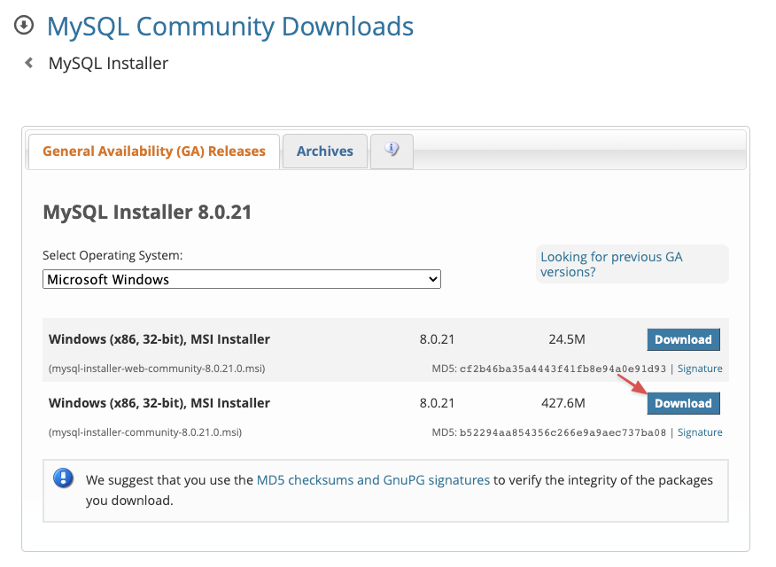
Écran d'installation MySQL
Une fois le programme téléchargé, lancez-le en double-cliquant dessus ; vous devriez arriver sur cette fenêtre :
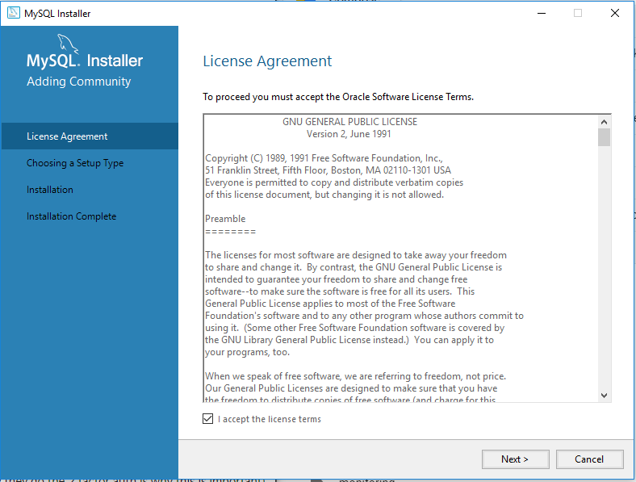
Fenêtre d'acceptation des conditions générales
Sur l’écran suivant, on vous demandera de faire un choix.
Sélectionnez “Developer Default” pour installer MySQL dans son entièreté.
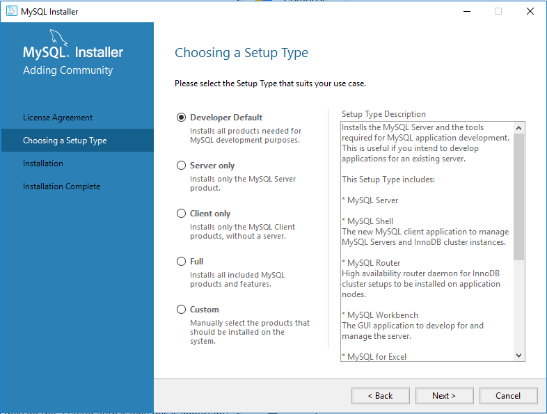
Sélection du paramétrage par défaut
Les autres options sont utiles si vous utilisez MySQL via un outil externe,
ou que vous avez déjà votre base de données.
Cliquez ensuite sur Suivant.
Une fois arrivé sur la dernière étape, validez et c’est bon, MySQL est installé sur votre machine !
Il nous reste maintenant à le lancer.
2.Lancez MySQL sur votre ordinateur
Pour lancer MySQL sur Windows, double-cliquez sur la console MySQL.
Celle-ci doit avoir apparu dans vos programmes, suite à l’installation précédente.
Une fois celle-ci lancée, vous vous retrouvez dans un terminal.
C’est ici que vous allez pouvoir gérer votre future base de données.
3.Créez le mot de passe de l’utilisateur root de votre BDD
Avant de pouvoir lancer MySQL, il vous faut créer un utilisateur dit root, qui sera l’utilisateur nous permettant de manipuler notre BDD.
En informatique, et notamment dans le monde des bases de données, l’utilisateur dit “root” (ou racine) est un utilisateur qui a tous les droits (création, suppression, mise à jour).
C’est celui qu’on utilise pour installer des logiciels sur notre machine.
Mais attention à ne jamais l’utiliser en production !
En effet, il serait très dangereux qu’un utilisateur puisse l’utiliser, car il obtiendrait l’accès à toutes nos données.
“Utiliser en production” désigne l’utilisation de votre base par votre application, depuis un serveur.
Alors que “l’utilisation en local” signifie l’utilisation sur votre ordinateur, à des fins de développement uniquement.
Pour créer le mot de passe “root”, utilisez la commande mysqladmin -u root password 'votresupermotdepassetrescomplique' (vous l’aurez compris, remplacez le mot de passe par celui que vous aurez choisi).
Vous pouvez vous féliciter, vous venez d’installer MySQL sur votre Windows !
Installez MySQL sur Mac
La manière la plus simple et efficace pour installer MySQL sur Mac est de passer par Homebrew.
1.Installez le gestionnaire Homebrew
Homebrew est un gestionnaire de paquets.
C’est un petit programme que vous pouvez utiliser dans votre terminal pour installer toutes sortes de choses.
C’est le gestionnaire open-source le plus répandu sur Mac.
Très polyvalent, il va vous permettre d’installer MySQL sur votre machine.
Mais il peut aussi vous permettre d’installer toutes sortes de programmes, allant de navigateurs comme Google Chrome à des langages de programmation comme Python !
Pour installer Homebrew, rendez-vous sur le site web de Homebrew : https://brew.sh/index_fr
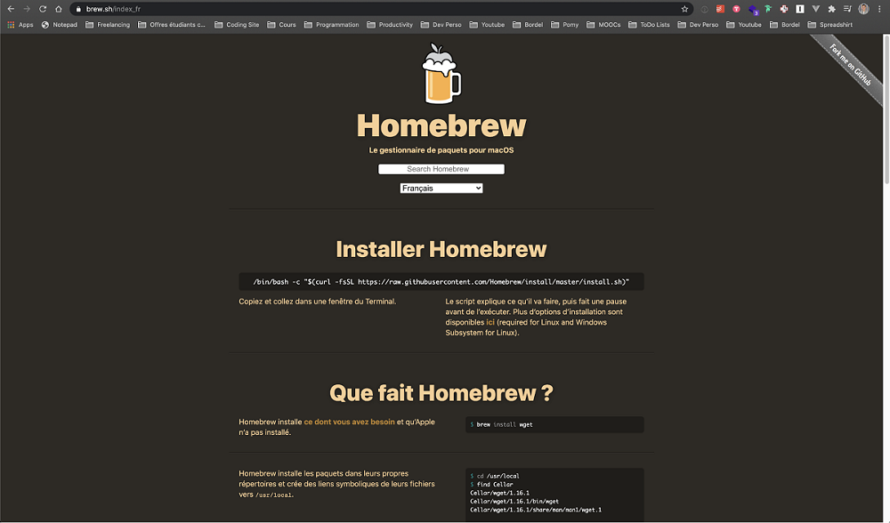
La page d’accueil de Homebrew
Ouvrez votre terminal (j’utilise iTerm2, disponible ici : https://www.iterm2.com/; mais vous pouvez utiliser le terminal natif de votre Mac).
Copiez-collez la ligne de commande disponible sur le site dans votre terminal et appuyez sur “enter”.
À l’heure actuelle, cette ligne de commande est : /bin/bash -c "$(curl -
fsSL https://raw.githubusercontent.com/Homebrew/install/master/install.sh)” La commande dans votre terminal
L’installation de Homebrew devrait se lancer.
Une fois celle-ci terminée, vous pouvez vérifier que l’installation s’est bien déroulée en tapant brew help .
Vous devriez voir ceci apparaître sur votre terminal :
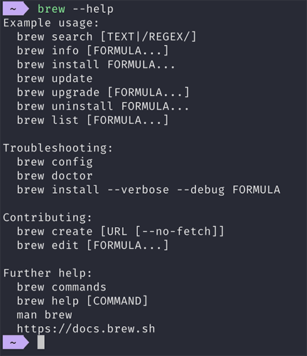
Données affichées dans votre terminal
L’écran liste les commandes disponibles via Homebrew.
Si ce n’est pas le cas, tentez de réinstaller Homebrew.
Soyez sûr d’avoir une connexion Internet fiable, et que votre compte utilisateur a les privilèges administrateur.
2.Installez MySQL via Homebrew
Maintenant que Homebrew est installé, il est temps d’installer MySQL !
Pour ce faire, rien de plus simple : utilisez la commande d’installation de Homebrew : brew install [le nom de ce qu’on souhaite installer]
La commande complète pour installer MySQL est donc brew install mysql.
Appuyez sur enter pour la valider.
Vous venez d’installer MySQL, mais il vous faut encore le démarrer !
Ne désespérez pas, c’est encore une fois très simple, et tout se fait via Homebrew.
3.Démarrez MySQL avec Homebrew
Pour que Homebrew puisse démarrer des processus (ici, celui de MySQL), utilisez la commande brew tap homebrew/services .
Une fois cette commande effectuée, démarrez MySQL grâce à la commande brew services start mysql .
Pour vérifier que le processus de MySQL est bien lancé, utilisez brew services list.
Si vous voyez apparaître MySQL dans la liste, c’est que tout s’est bien passé !
Vous pouvez même le vérifier doublement en tapant la commande mysql -V qui vous permet de regarder quelle version de MySQL est actuellement en train de tourner sur votre machine (dans mon cas, la version 8.0.21).
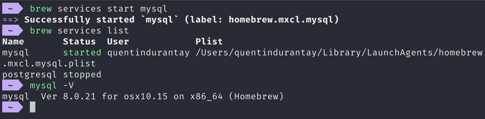
Écran confirmant l’installation de Homebrew
4.Créez le mot de passe de l’utilisateur root de votre BDD
Il vous reste une ultime commande et le tour est joué !
C’est celle qui vous permet de créer le mot de passe de l’utilisateur “root”.
En informatique, et notamment dans le monde des bases de données, l’utilisateur dit “root” (ou racine) est un utilisateur qui a tous les droits (création, suppression, mise à jour).
C’est celui qu’on utilise pour installer des logiciels sur notre machine.
Mais attention à ne jamais l’utiliser en production !
En effet, il serait très dangereux qu’un utilisateur puisse l’utiliser, car il obtiendrait l’accès à toutes nos données.
“Utiliser en production” désigne l’utilisation de votre base par votre application, depuis un serveur.
Alors que “l’utilisation en local” signifie l’utilisation sur votre ordinateur, à des fins de développement uniquement.
Pour créer le mot de passe “root”, utilisez la commande mysqladmin -u root password 'votresupermotdepassetrescomplique' (vous l’aurez compris, remplacez le mot de passe par celui que vous aurez choisi). La commande dans votre terminal
Vous pouvez vous féliciter, vous venez d’installer MySQL sur votre Mac !
Installez MySQL sur Linux (Ubuntu)
La manière la plus simple et efficace pour installer MySQL sur Linux est de passer par le terminal.
Le terminal, c’est un programme qui vous permet de lancer des commandes de programmation (vous savez, le fameux écran avec du texte bizarre comme dans Matrix).
Il se trouve dans vos programmes (il est installé par défaut sur Linux).
1.Installez MySQL via le terminal
Sur Linux, la vie est très simple car vous disposez d’un super gestionnaire de paquets : APT.
C’est un petit programme que vous pouvez utiliser dans votre terminal pour installer toutes sortes de choses.
Très polyvalent, il va vous permettre d’installer MySQL sur votre machine.
Mais il peut aussi vous permettre d’installer toutes sortes de programmes, comme par exemple des langages de programmation comme Python !
Commencez par mettre à jour APT en tapant dans votre terminal la commande sudo apt update .
Appuyez sur enter pour la valider.
Une fois cette commande effectuée, installez MySQL en tapant la commande sudo apt install mysql-community-server.
MySQL est maintenant installé sur votre machine, il reste à le démarrer et le configurer.
2.Démarrez MySQL avec le terminal
Pour démarrer MySQL, il vous faut lancer le “service” de MySQL.
C’est-à-dire faire comprendre à votre ordinateur qu’il doit lancer MySQL et le laisser tourner.
Pour ce faire, entrez la commande sudo service mysql start dans votre terminal.
MySQL tourne (enfin 🙌🏼), mais il vous reste à le configurer.
3.Créez le mot de passe de l’utilisateur root de votre BDD
Il vous reste une ultime commande et le tour est joué !
C’est celle qui vous permet de créer le mot de passe de l’utilisateur “root”.
En informatique, et notamment dans le monde des bases de données, l’utilisateur dit “root” (ou racine) est un utilisateur qui a tous les droits (création, suppression, mise à jour).
C’est celui qu’on utilise pour installer des logiciels sur notre machine.
Mais attention à ne jamais l’utiliser en production !
En effet, il serait très dangereux qu’un utilisateur puisse l’utiliser, car il obtiendrait l’accès à toutes nos données.
“Utiliser en production” désigne l’utilisation de votre base par votre application, depuis un serveur.
Alors que “l’utilisation en local” signifie l’utilisation sur votre ordinateur, à des fins de développement uniquement.
Pour créer le mot de passe “root”, utilisez la commande mysqladmin -u root password 'votresupermotdepassetrescomplique' (vous l’aurez compris, remplacez le mot de passe par celui que vous aurez choisi). La commande dans votre terminal
Vous pouvez vous féliciter, vous venez d’installer MySQL sur votre Linux !
En résumé
La première chose à faire pour utiliser un SGBD est de créer un utilisateur “root”, qui aura tous les droits pour créer et modifier des bases de données.
Une application, c’est le code informatique qui vous permet d’effectuer des actions.
Par exemple, commander un taxi ou écrire du texte.
Or, cette application a besoin de données pour exister, données qu’elle va piocher dans une BDD.
Prenez Le Bon Coin : le code de l’application vous permet de voir des listes d’objets à acheter près de chez vous, de contacter leur propriétaire, etc.
Mais pour connaître ces objets, numéros de téléphone, adresses, Le Bon Coin a dû aller les chercher dans une base de données (probablement MySQL 😉).
Créons la base qui contiendra nos objets.
Dans une BDD, on stocke plusieurs choses.
Et même un peu ce qu’on veut. Un objet, c’est chacune de ces “choses”.
Imaginons que vous soyez au marché. Un objet, c’est une volaille, un fruit, etc.
Si on reprend notre exemple de l’application Foodly, une pomme ou une poire sont chacune une instance d’un objet “fruit”.
Chaque application est associée à une base de données.
Foodly étant une seule et unique application, nous allons créer une seule BDD.
Base qu’on va tout naturellement appeler… Foodly.
Une application complexe peut être reliée à plusieurs BDD à la fois, et ce, pour plusieurs raisons.
Par exemple, Facebook utilise plusieurs BDD pour des besoins spécifiques (certaines gèrent mieux la recherche, les autres le stockage…),
mais surtout pour des raisons de taille de la donnée !
Vous vous doutez qu’avec plus d’un milliard d’utilisateurs, il leur faut plusieurs bases.
Attention lorsqu’on nomme les bases de données !
Tout comme beaucoup de “noms” en informatique (variables, objets, identifiants…), ceux-ci ne doivent pas contenir de caractères spéciaux ou d’espaces.
Il est même recommandé de n’utiliser que des caractères minuscules.
Pour activer MySQL dans votre terminal, il va falloir exécuter la commande mysql -u root -p .
Cette commande signale que vous souhaitez lancer MySQL, avec l’utilisateur root en saisissant le mot de passe (vous vous en souvenez ? Nous en avons parlé précédemment).
Justement, MySQL nous demande ledit mot de passe.
Entrez celui que vous avez créé précédemment, et le tour est joué !
Écran du terminal suite à l’entrée de votre mot de passe
Pour créer une base, on utilise la commande CREATE DATABASE nomdelabase; .
Pour créer la base de Foodly, la commande à taper devient CREATE DATABASE foodly;.
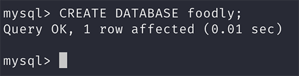
Écran du terminal après avoir saisi la commande
SQL vous indique que la commande a fonctionné en répondantQuery OK .
Il reste néanmoins un problème : MySQL ne sait pas que vous souhaitez spécifiquement utiliser cette base de données.
Car vous pourriez en avoir plusieurs !
Imaginez que vous travailliez sur plusieurs projets à la fois, vous pourriez très bien avoir une base de données pour chacun.
Pour sélectionner la base que vous venez de créer, utilisez la commande USE nomdelabase; , qui devient donc… USE foodly;Écran du terminal pour l’utilisation de la BDD
Une fois USE foodly; exécutée, ça y est, la base Foodly est sélectionnée et vous travaillez uniquement dans cette dernière.
Si jamais vous aviez besoin de changer de base de données, alors vous devriez répéter cette commande pour passer sur la nouvelle base.
Testez l’activation de votre BDD avec SHOW TABLES
Pour tester l’activation de votre base de données, vous allez y insérer votre premier objet.
Dans son état actuel, votre base vide ne vous sert pas à grand-chose...
Définissez les types de données
Avant de pouvoir insérer quoi que ce soit, vous devez d’abord créer une table.
En effet, chaque “table” est l’équivalent d’une feuille de travail dans un logiciel type Excel ou Google Sheets, qui stocke toutes les occurrences d’un objet en particulier.
Qui dit base de données dit type de données.
MySQL doit savoir quelle forme auront vos objets avant de vous laisser les manipuler dans chaque table.
C’est l’équivalent en SQL de la modélisation de bases de données où vous devez déclarer les objets que vous souhaitez stocker et ce qu’ils vont contenir.
Le type de donnée est comme un papier d'identité.
Il est commun à toutes les personnes d’un pays et permet de les identifier selon des critères précis.
Le modèle de données, c’est pareil, mais pour chaque objet de la base de données.
Quand on parle de type en base de données, on peut parler de deux types :
Les types d’objets, catégorisés par leur nom.
Par exemple, vous avez ici deux objets dont les noms sont utilisateur et aliment.
La convention veut qu’on utilise des noms en minuscules et au singulier.
Les types de champs
dont on va parler juste après.
Je vous propose de copier-coller cette commande pour créer la table des utilisateurs.
Je vais ensuite vous l’expliquer, ne vous en faites pas.
CREATE TABLE utilisateur (
id INTEGER NOT NULL AUTO_INCREMENT PRIMARY KEY,
nom VARCHAR(100),
prenom VARCHAR(100),
email VARCHAR(255) NOT NULL UNIQUE
);
On obtient bien Query OK, donc tout s’est bien passé. Votre objet utilisateur va être composé de plusieurs caractéristiques, aussi appelées champs.
Tout comme votre passeport qui recense votre nom ou votre âge, eh bien, pour vos utilisateurs, on va faire de même.
Chacun de ces champs doit avoir un type, pour que MySQL comprenne à quoi “va ressembler” la donnée qui sera stockée dans ce champ.
Par exemple, est-ce que le champ contiendra du texte, des chiffres, etc.
Ici, on déclare plusieurs champs qui seront partagés par tous les utilisateurs.
Voici un tableau récapitulatif du schéma des utilisateurs :
Nom du champ
Type du champ et options
Description
id
PRIMARY KEY (option)
Champ spécial obligatoire dans toutes les tables.
Indique à MySQL que ce champ sera l'identifiant permettant d'identifier les objets.
INTEGER (type)
Champ numérique sous forme de nombre entier.
NOT NULL (option)
Ce champ ne peut pas être nul.
AUTO_INCREMENT (option)
Ce champ sera créé par MySQL automatiquement, pas besoin de s'en soucier !
MySQL va utiliser l'id précédent et y ajouter +1 lors de l'ajout d'un nouvel objet.
nom
VARCHAR(100) (type)
Champ sous forme de texte,
limité à 100 caractères.
prenom
VARCHAR(100) (type)
Champ sous forme de texte,
limité à 100 caractères.
email
VARCHAR(255) (type)
Champ sous forme de texte,
limité à 255 caractères.
NOT NULL (option)
Ce champ ne peut pas être nul.
UNIQUE (option)
Ce champ ne peut pas avoir la même valeur en double.
Une option dans un champ est un attribut optionnel qui va modifier le comportement de ce champ.
Retrouvez sur le site de MySQL tous les types de champs disponibles sur le SGBD (en anglais).
Au tour des aliments !
Copiez-collez cette commande pour créer leur table.
CREATE TABLE aliment (
id INTEGER NOT NULL AUTO_INCREMENT PRIMARY KEY,
nom VARCHAR(100) NOT NULL,
marque VARCHAR(100),
sucre FLOAT,
calories INTEGER NOT NULL,
graisses FLOAT,
proteines FLOAT,
bio BOOLEAN DEFAULT false
);
FLOAT
signifie que le champ contiendra des chiffres décimaux ;
BOOLEAN
est un type de champ très connu en informatique.
Il ne peut stocker que les valeurs true (vrai) ou false (faux) ;
DEFAULT
sert à indiquer une valeur par défaut.
Utile pour ne pas avoir à spécifier une valeur tout le temps !
Ici, on indique que la valeur par défaut sera la valeur false .
Et pour les champs, c’est assez simple :
id
l'identification de l'objet ;
nom le nom de l’aliment (ex. : lait de soja) ;
marque sa marque (ex. : Bjorg) ;
sucre, calories, graisses, proteines la contenance de chaque élément en grammes (ex. : “2” pour 2 grammes) ;
bio si l’aliment est bio ou non.
Voici un exemple de ce que donnerait cette table avec quelques aliments :
id
nom
marque
calories
sucre
graisses
proteines
bio
1
Pomme
Monoprix
65
14,4
0,4
0,4
FALSE
2
Oeuf Bio
Carrefour
167
0
11,1
14,2
TRUE
3
Brique de lait
Intermarché
414
43,2
13,5
28,8
FALSE
Pour vérifier que tout ce que vous avez fait fonctionne, rien de plus simple !
On demande à MySQL de nous afficher toutes les tables présentes dans notre base grâce à la commande SHOW tables;.
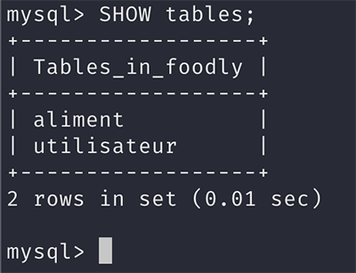
Écran du terminal après avoir saisi la commande SHOW tables
On peut même aller encore plus loin en demandant à MySQL de nous afficher le schéma de chaque table grâce à la commande SHOW COLUMNS FROM lenomdematable;.
Pour lire le schéma de vos tables, il vous faut taper SHOW COLUMNS FROM utilisateur;
et SHOW COLUMNS FROM aliment;.
Si vous obtenez le même résultat que sur ces screenshots, c’est que vous avez tout bon !
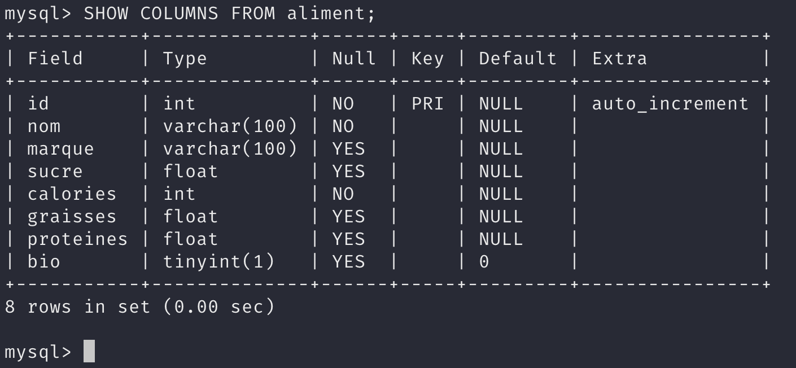
Affichage des schémas des tables utilisateur et aliment
Vous avez saisi ces nouvelles commandes dans votre terminal ? Vérifiez-les grâce au screencast récapitulatif
Lors des parties suivantes, je vous demanderai parfois de télécharger un fichier afin de mettre votre BDD à jour.
Pour ce faire, j’ai créé un projet GitHub disponible ici : Github
À chaque fois que vous souhaiterez mettre à jour votre BDD :
Téléchargez le fichier correspondant depuis GitHub, chaque dossier sur GitHub représentant la partie du cours dans laquelle vous vous trouvez.
Placez ce fichier dans le dossier correspondant à votre utilisateur Windows, Mac ou Linux.
Allez dans votre terminal, entrez la commande mysql -u root -p nom_de_la_base_de_donnees < nom_du_fichier.sql
puis tapez votre mot de passe root (que vous venez de créer dans cette partie !).
Prenez bien soin de remplacer “nom_de_la_base_de_donnees” par le nom de la BDD que vous souhaitez mettre à jour (par exemple, foodly)
et “nom_du_fichier” par le nom du fichier téléchargé (par exemple, foodly.sql).
Et voilà, votre BDD est à jour !
En résumé
Pour créer une base de données, on utilise la commande CREATE DATABASE; .
Une table est un espace dans votre base de données qui va stocker des objets de même type. On la crée avec la commande CREATE TABLE;
Pour vérifier la création des tables, on utilise la commande SHOW COLUMNS FROM table; qui permet de voir la structure de cette table.
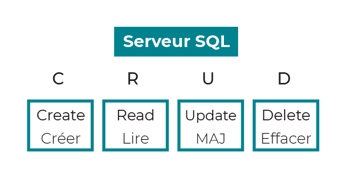
L’acronyme CRUD où MAJ signifie Mettre À Jour
Commencez d'abord par télécharger la base de donnée Foodly de cette partie 2.
Insérez des objets uniques pour alimenter votre BDD
Première étape : vous allez ajouter un utilisateur à votre BDD, car une application sans utilisateurs n’est pas une BDD.
Imaginez qu’un nouvel utilisateur s’inscrive sur Foodly.
Comment l’application ferait-elle pour inscrire cet utilisateur dans la base MySQL ?
Elle utiliserait la commande SQLINSERT INTO.
Cette commande prend en compte :
les paramètres de la table dans laquelle vous souhaitez ajouter l’objet (ici la table “utilisateur”) ;
l’ordre des colonnes (ou caractéristiques de l’objet) ;
ainsi que les valeurs correspondantes pour l’objet.
Insertion d’un utilisateur dans la BDD de Foodly
Souvenez-vous, votre table “utilisateur” dispose de 4 champs :
Nom du champ
Descriptif du champ
Exemple de valeur
id
identifiant unique de l'utilisateur dans la BDD
1
nom
nom de famille de l'utilisateur
Durantay
prenom
prénom de l'utilisateur
Quentin
email
email de l'utilisateur
quentin@gmail.com
Remarquez que je ne me préoccupe pas de l’id.
Je pourrais tout à fait le renseigner.
Mais souvenez-vous, nous l’avons configuré de manière à ce que MySQL l’auto-incrémente pour nous.
Du coup, soyons fainéants et laissons MySQL gérer ce paramètre pour nous !
Voici, par exemple, la commande pour m’ajouter en tant qu’utilisateur dans la base :
INSERT INTO `utilisateur` (`nom`, `prenom`, `email`)
VALUES
('Durantay', 'Quentin', 'quentin@gmail.com');
Si vous exécutez cette commande plusieurs fois, vous remarquerez un message d’erreur.
C’est tout à fait normal.
Souvenez-vous, l’e-mail d’un utilisateur a été configuré dans le schéma de la table comme une valeur unique.
Vous ne pouvez donc pas créer un 2e utilisateur avec le même e-mail.
Voyons ensemble ce qui vient de se passer :
On indique en SQL qu’on souhaite ajouter un objet avec INSERT INTO.
On écrit ensuite le nom de la table dans laquelle on souhaite ajouter l’objet, ici 'utilisateur'.
On écrit ensuite entre parenthèses la liste des colonnes que l’on va ajouter, ainsi que leur ordre.
On ajoute le mot clé SQL VALUES qui indique qu’on va ensuite déclarer les valeurs que l’on souhaite ajouter.
On écrit la liste des valeurs de l’objet qu’on souhaite ajouter, dans le même ordre que les colonnes citées en 3.
Insérez plusieurs objets à la fois
Vous avez désormais une application avec un utilisateur, mais il va vous en falloir plusieurs !
Je ne sais pas vous, mais je trouve ça fastidieux d’avoir à écrire une commande pour chaque utilisateur que j’ajoute.
SQL a pensé à nous !
Il est possible d’ajouter plusieurs objets en une seule commande en séparant leurs valeurs par des virgules,
comme dans la commande ci-dessous grâce à laquelle j’ajoute 4 utilisateurs à la BDD :
INSERT INTO `utilisateur` (`nom`, `prenom`, `email`)
VALUES
('Doe', 'John', 'john@yahoo.fr'),
('Smith', 'Jane', 'jane@hotmail.com'),
('Dupont', 'Sebastien', 'sebastien@orange.fr'),
('Martin', 'Emilie', 'emilie@gmail.com');
Dans les faits, vous allez user et abuser de cette commande pour ajouter différents objets dans votre base.
Réutilisons-la justement pour ajouter des aliments.
Souvenez-vous, la table “aliment” est constituée des colonnes suivantes :
Nom du champ
Descriptif du champ
Exemple de valeur
id
identifiant unique de l'aliment dans la BDD
1
nom
nom de l'aliment
poire
marque
marque de l'aliment
Monoprix
calories
nombre de calories contenues dans l'aliment (en kcal)
72
sucre
la concentration en sucre de l’aliment (en grammes)
19,1
graisses
la concentration en graisses de l’aliment (en grammes)
0,2
proteines
la concentration en protéines de l’aliment (en grammes)
0,4
Voici la commande pour ajouter les aliments poire, pomme, œuf et lait d’amande à notre BDD :
INSERT INTO `aliment` (`nom`, `marque`, `sucre`, `calories`, `graisses`, `proteines`,`bio`)
Vous vous demandez sûrement pourquoi certaines valeurs sont entre guillemets simples, d’autres entre backticks (`) et certaines sans rien.
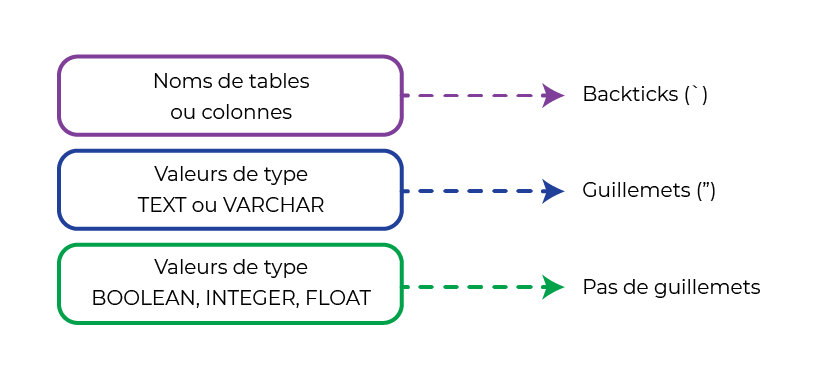
La rédaction des valeurs selon leur type
Les explications sont simples :
Pour signaler à SQL des noms de tables ou colonnes, utilisez des backticks.
Pour les valeurs de type texte (souvenez-vous, les types TEXT ou VARCHAR), vous devez les écrire entre guillemets.
Si un guillemet est présent dans le texte (comme dans l’exemple plus haut avec 'lait d\'amande'), vous devez mettre un backslash (\) avant ce dernier pour dire à SQL qu’il fait partie intégrante de la valeur.
Pour le reste (les valeurs de type BOOLEAN, INTEGER ou FLOAT), pas besoin de guillemets !
À vous de jouer !
Essayez maintenant de créer un nouvel aliment.
Partons sur une boîte de conserve de haricots verts.
En voici les données nutritionnelles :
nom
marque
calories
sucre
graisses
proteines
bio
haricots verts
Monoprix
25
3
0
1,7
FALSE
À partir de ce tableau, j’aimerais que vous ajoutiez cet aliment dans la BDD de Foodly.
Regardez bien comment nous nous y sommes pris jusqu’ici.
En résumé
On ajoute un objet à une table avec la commande INSERT INTO.
Lors de l’utilisation de cette commande, on mentionne quelles sont les colonnes (et dans quel ordre) que l’on va remplir.
Et on les sépare par des virgules.
On peut ajouter un ou plusieurs objets à la fois, là aussi, en les séparant par des virgules.
2.2 - Sélectionnez les données présentes dans votre BDD -
Lisez les objets que vous venez de créer
Vous venez d’ajouter vos premières données dans votre BDD, c’est top !
Mais à quoi cela servirait si vous ne pouvez pas les récupérer par la suite ?
Reprenons l’exemple de l’application Foodly.
L’objectif des utilisateurs de cette application est de savoir quelle est la composition des aliments qu’ils envisagent d’acheter.
C’est bien beau d’avoir une BDD, mais encore faut-il que l’application puisse y lire les objets.
C’est ce à quoi on va s’attaquer dans ce chapitre...
Nous allons voir ensemble les commandes qui vous permettent de récupérer et lire la donnée contenue dans la base de Foodly.
Commençons par une question simple : comment faire pour afficher tous les utilisateurs présents dans votre BDD ?
Comme pour les commandes d’insertion, vous allez devoir indiquer la table dans laquelle vous souhaitez récupérer la donnée, ici “utilisateur”.
Le mot clé pour récupérer et lire de la donnée est SELECT.
En commençant une commande SQL par ce mot, MySQL (et les autres SGBD) comprend que vous souhaitez sélectionner (et donc récupérer) de la donnée.
Tapez cette commande dans votre terminal :
SELECT * FROM utilisateur;
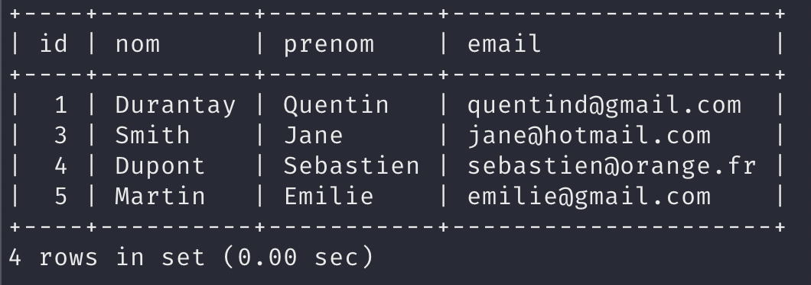
Voici ce que vous devriez voir apparaître après avoir saisi la commande
MySQL vous affiche la table “utilisateur” sous forme de tableau récapitulatif, avec chaque objet sur sa propre ligne.
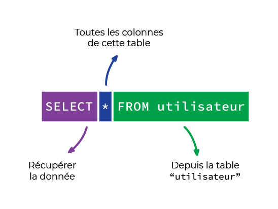
La commande SELECT
Décortiquons ensemble la commande que nous venons d’effectuer pour arriver à ce résultat :
SELECT
comme nous l’avons vu, indique à MySQL que nous souhaitons récupérer de la donnée ;
* indique que l’on souhaite récupérer toutes les colonnes (ou champs) présents dans cette table (ici : id, nom, prenom et email) ;
FROM table permet à MySQL de comprendre depuis quelle table nous souhaitons récupérer de la donnée.
Lisez quelques colonnes seulement
C’est super ça, mais je suis réellement obligé de récupérer toutes les colonnes à chaque fois ?
Avant que je vous réponde, tapez cette commande dans votre terminal :
SELECT `nom`, `prenom`, `email` FROM utilisateur;
Que remarquez-vous après l’avoir tapée ?
Eh oui, la colonne id n’est plus visible dans le tableau récapitulatif !
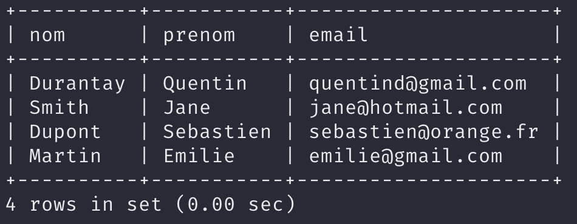
Écran du terminal suite à la commande saisie
De la même manière qu’on précisait les colonnes que l’on souhaitait ajouter avec INSERT, on peut préciser celles que l’on veut que l’application lise avec SELECT.
Pour cela, il suffit de mentionner les noms de colonnes que l’on souhaite récupérer après le mot clé SELECT, comme dans l’exemple ci-dessus.
À votre tour d’essayer !
Je vous propose de lister tous les noms et les calories associées pour chaque aliment présent dans la BDD de Foodly.
Comment feriez-vous ?
SELECT `nom`,`calories` FROM aliment;
En résumé
Les objets d’une table se lisent avec la commande SELECT FROM .
Lors de l’utilisation de cette commande, on mentionne quelles sont les colonnes que l’on veut afficher en les séparant par des virgules.
Admettons maintenant qu’un utilisateur souhaite mettre à jour son e-mail via l’application.
Comment Foodly traduirait ceci en commande SQL pour MySQL ?
Ici, le mot clé magique est UPDATE, qui signifie “mise à jour” en anglais.
Tapez cette commande dans votre terminal pour changer l’e-mail du premier utilisateur :
UPDATE `utilisateur` SET `email` = 'quentind@gmail.com' WHERE `id` = '1';
Vous devriez avoir un message qui confirme ce changement.
Si vous lisez à nouveau les données de votre BDD sur la table “utilisateur”,
vous remarquerez que l’e-mail de l’utilisateur avec l’id 1 est celui qu’on vient de taper.
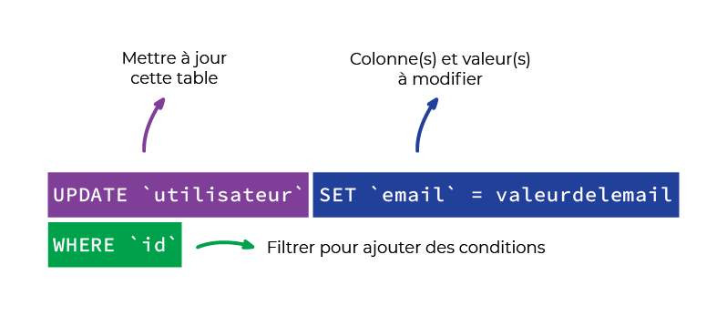
La commande UPDATE
Mot clé
Description
UPDATE table
Signifie à SQL que vous souhaitez mettre à jour de la donnée dans votre BDD.
Vous indiquez aussi la table dans laquelle se trouve(nt) le ou les objets que vous souhaitez modifier.
SET colonne = valeur
Sert à indiquer à SQL quelles sont la ou les colonnes à modifier,
et quelles sont la ou les valeurs qu’elles doivent désormais prendre.
WHERE colonne = valeur
C’est ce qu’on appelle un filtre.
Vous allez les voir plus en détail dans la partie 3, mais sachez qu’ils servent à restreindre
la commande en cours à un ou des objets répondant à des conditions précises.
Ici, on va mettre à jour uniquement l’objet dont l’id est 1, soit le premier utilisateur !
Il est tout à fait possible d’utiliser UPDATE sans filtres (sans WHERE ).
Néanmoins, la commande modifierait tous les objets de notre table.
C’est très rarement ce que l’on souhaite.
À vous de jouer !
Nous avons oublié de préciser le type de pomme vendue à Intermarché.
Il s'agit d'une pomme golden.
Comment feriez-vous pour rectifier le tir ? Reponse
UPDATE aliment SET `nom`= 'Pomme Golden' WHERE `id`= '2';
En résumé
On met à jour les objets d’une table avec la commande UPDATE.
Lors de l’utilisation de cette commande, on mentionne quelles sont les colonnes qu’on souhaite mettre à jour avec SET.
Si on ne filtre pas avec WHERE, on risque de mettre à jour tous les objets de la table.
Ce qui est rarement ce que l’on souhaite !
Finissons par un dernier cas d’usage.
Admettons qu’un utilisateur souhaite se désinscrire de Foodly.
Il faudrait alors le supprimer de votre BDD.
Mais comment faire ?
Ici, le mot clé est DELETE. Signifiant “supprimer” en anglais.
Attention toutefois, cette commande est très simple à utiliser, parfois trop même !
Une fois la donnée supprimée de votre BDD, impossible de la récupérer !
À utiliser avec parcimonie.
Voici par exemple la commande pour supprimer le deuxième utilisateur :
DELETE FROM `utilisateur` WHERE `id` = '2';
Une fois cette commande effectuée, vous pouvez vérifier qu’elle a fonctionné en listant les utilisateurs (commande SELECT).
Là aussi, il vaut mieux utiliser cette commande avec WHERE pour en limiter l’effet.
Si vous ne le faites pas, vous risqueriez de supprimer tous les objets d’une table !
Dans notre cas, adieu à nos utilisateurs.
À vous de jouer !
Bon, on va dire qu’on s’est complètement trompé pour notre pomme golden.
Même en la modifiant précédemment dans la BDD de Foodly, les données sont complètement fausses.
Comment feriez-vous pour la supprimer définitivement de la BDD ?
Reprenez votre terminal et essayez de supprimer la pomme golden. Reponse
DELETE FROM aliment WHERE `id`='2';
En résumé
On supprime les objets d’une table avec la commande DELETE.
Si on ne filtre pas avec WHERE, on risque de supprimer tous les objets de la table.
Ce qui est rarement ce que l’on souhaite !
3.1 - Extrayez des informations spécifiques de votre BDD -
Vous allez apprendre dans cette partie comment extraire uniquement l’information qui vous intéresse, et en tirer quelques enseignements !
Avant tout, téléchargez la base de données Foodly pour cette partie.
Isolez un objet unique
Dans la partie précédente, à chaque fois que vous lisiez de la donnée, c’était celle d’une table toute entière.
Pour rappel, une commande telle que SELECT * FROM aliment; va vous afficher tous les aliments de votre BDD.
Imaginons un utilisateur dans votre application Foodly. Il est en train de scanner un aliment lors de ses courses.
L’application demandera à la BDD de lui restituer l’aliment en question.
Pour ce faire, il existe une commande en SQL que l’application pourra utiliser pour récupérer uniquement cet aliment.
Il s’agit de la commande WHERE.
Par exemple, la commande :
SELECT * FROM aliment WHERE id = 4;
va nous restituer uniquement l’aliment dont l’id est le numéro 4 !
WHERE ne se limite pas uniquement aux id.
SELECT * FROM aliment WHERE nom = “poire”;
va nous restituer uniquement l’aliment dont le nom est 'poire' !
Vous pouvez appliquer WHERE à n’importe quelle colonne en utilisant le nom de cette colonne.
À noter que WHERE peut s'exécuter avec SELECT ,
mais aussi avec n’importe quelle autre commande :
vous pouvez l’utiliser avec UPDATE ou DELETE pour ne mettre à jour ou supprimer qu’un objet spécifique, et non tous les objets de votre table !
Isolez plusieurs objets répondant à un critère de comparaison
OK, c’est utile de ne pouvoir sélectionner qu’un seul objet.
Mais admettons que votre utilisateur souhaite voir tous les aliments bio de son hypermarché, ou bien ceux qui ne sont pas trop caloriques.
WHERE fonctionne avec un principe de comparaison.
Dans vos précédentes commandes, vous utilisiez l’opérateur égal = pour indiquer que vous ne vouliez que l’objet dont le nom était égal à une valeur.
Or, vous pouvez utiliser tous les opérateurs classiques, tels que :
supérieur à ( > ) ;
inférieur à ( < ) ;
supérieur ou égal à (>=) ;
et inférieur ou égal à (<=).
SELECT * FROM aliment WHERE calories < 90;
va afficher tous les aliments dont la teneur en calories n’excède pas (strictement) 90 kcal
Isolez des objets à partir d’une comparaison sur du texte
La limite de WHERE est que la comparaison ne peut s’effectuer que sur des données chiffrées.
Il existe un autre mot clé pour effectuer des comparaisons sur du texte : il s’agit du mot clé LIKE.
Ce dernier permet de sélectionner les objets dont le texte d’une colonne répond à un modèle spécifique.
C’est en fait lui-même un opérateur, car il s’ajoute au sein d’une commande WHERE.
SELECT * FROM utilisateur WHERE email LIKE “%gmail.com”;
va afficher tous les utilisateurs dont l’e-mail se termine par “gmail.com”.
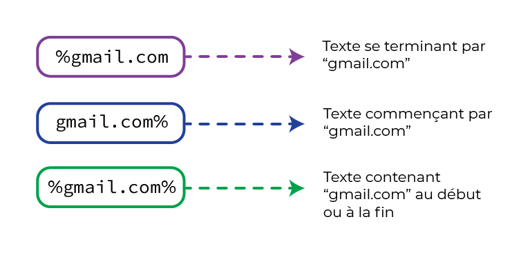
L’utilisation du pourcentage (%)
Ce “%gmail.com” signifie que vous souhaitez récupérer tout texte finissant par “gmail.com”.
Le pourcentage (%) indique à SQL :
“il peut y avoir autant de texte que tu veux, et aussi long que tu veux avant le “gmail.com” ;
“ne prête pas attention au contenu qu’il y a avant gmail.com.”
Si vous souhaitiez récupérer le texte qui commence par “gmail.com” vous écririez : “gmail.com%”.
Enfin, si vous cherchiez tout texte qui contient “gmail”, peu importe qu’il soit au début ou à la fin, vous écririez “%gmail%”.
Ordonnez les objets récupérés pour chaque requête
Reprenons l’exemple de notre utilisateur qui cherche à afficher les aliments peu caloriques dans Foodly.
Grâce à ce que vous avez appris, vous pouvez désormais afficher les aliments dont les calories ne dépassent pas un certain seuil.
Le mot clé ORDER BY calories ASC permet d’afficher les aliments par ordre croissant de calories.
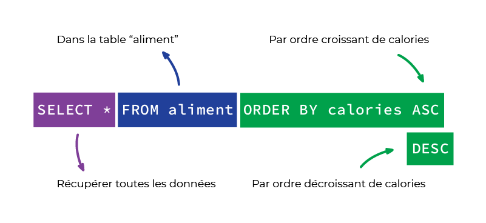
Le mot clé ORDER BY
Ce mot clé vous permet d’ordonner une colonne par ordre croissant (ascending en anglais, d’où le mot clé SQL ASC),
ou décroissant (descending en anglais, soit le mot clé DESC).
Voici donc la commande à effectuer pour afficher les aliments par ordre croissant de calories :
SELECT * FROM aliment ORDER BY calories ASC;
Bien sûr, vous pouvez mixer les commandes entre elles !
Voici la commande pour n’afficher que les aliments dont les calories ne dépassent pas 90 kcal, mais de manière décroissante :
SELECT * FROM aliment WHERE calories < 90 ORDER BY calories DESC;
Cette commande fonctionne aussi avec le texte !
Si vous effectuez un ORDER BY sur une colonne de texte, celle-ci sera ordonnée :
soit dans l’ordre alphabétique ( ASC ). SELECT * FROM utilisateurs ORDER BY prenom ASC;
affiche les utilisateurs avec les prénoms affichés par ordre alphabétique ;
soit dans l’ordre opposé ( DESC ). SELECT * FROM utilisateurs ORDER BY prenom DESC;
affiche les utilisateurs avec les prénoms affichés par ordre anti-alphabétique.
À vous de jouer !
Imaginons que je vous demande tous les aliments qui ne sont pas bio dans la base, classés par ordre décroissant de contenance en protéines.
SELECT * FROM aliment WHERE bio = false ORDER BY proteines DESC;
En résumé
Vous avez appris comment filtrer la donnée que vous souhaitez récupérer avec la commande WHERE(et les opérateurs comme =ou LIKE).
Vous savez désormais ordonner les résultats d’une requête SQL avec la commande ORDER BY.
3.2 - Effectuez des opérations et sauvegardez vos requêtes -
Comptez le nombre d’objets récupérés via une requête
Combien d’objets répondent à un critère (ou une requête SQL) donné ?
Par exemple, admettons qu’un utilisateur de Foodly souhaite savoir combien il existe d’aliments bio, ou que vous souhaitiez compter le nombre d’utilisateurs dans l’application.
Il existe le mot clé COUNT, qui permet justement cela.
Appliqué à n’importe quelle commande SQL de type SELECT , il vous donnera le nombre d’objets récupérés plutôt que leur valeur.
En plus de ne faire “que compter”, COUNT est bien plus rapide à effectuer qu’un SELECT “classique” pour votre base de données.
Le SGBD et la BDD arriveront à retrouver le résultat de votre commande bien plus rapidement (parfois, la différence se compte en minutes !).
Privilégiez-le avant d’effectuer des requêtes sur un large groupe de données !
Vous souvenez-vous de la commande que nous avions effectuée pour récupérer uniquement les utilisateurs dont l’e-mail était un Gmail ?
Comment l’adapter pour connaître le nombre d’utilisateurs avec une adresse Gmail dans la base ?
SELECT COUNT(*) FROM utilisateur WHERE email LIKE "%gmail.com";
MySQL vous affiche le nombre d’objets plutôt que leur contenu.
Vous voyez donc combien d’utilisateurs répondent à ce critère.
En appliquant un COUNT(*) , vous comptez le nombre d’objets.
Mais vous pouvez aussi restreindre le comptage à une colonne spécifique en écrivant COUNT(colonne) .
Enfin, vous pouvez aussi compter le nombre d’éléments uniques d’une colonne avec COUNT(DISTINCT colonne) .
Par exemple,SELECT COUNT(*)FROM utilisateur; compte tous les utilisateurs,
tandis que SELECT COUNT(nom) FROM utilisateur; compte tous les noms de famille.
Ok, vous allez me dire qu’on trouve exactement le même nombre. Et c’est vrai.
Compter dans une colonne prend vraiment son sens en comptant le nombre de valeurs distinctes.
SELECT COUNT(DISTINCT nom) FROM utilisateur; comptera uniquement les noms de familles différents, vous permettant de voir si certains utilisateurs ont le même nom !
Effectuez des opérations sur des données chiffrées
Admettons que l’on souhaite connaître le total calorique d’un groupe d’articles, ou bien la contenance moyenne en sucre d’un groupe d’aliments : au lieu de tout noter à la main depuis la base de données, laissez MySQL effectuer ces opérations pour vous !
Pour cela, il existe plusieurs mots clés que vous pouvez appliquer à une colonne lors d’une requête pour en modifier le résultat :
AVG : nous donne la moyenne de la colonne sur la sélection ;
SUM : nous donne la somme de la colonne sur la sélection ;
MAX : nous donne le maximum de la colonne sur la sélection ;
MIN : nous donne le minimum de la colonne sur la sélection.
Envie de connaître le maximum de teneur en sucre des aliments dans notre base ?
Rien de plus simple :
SELECT MAX(sucre) FROM aliment;
Quelle est la teneur moyenne en calories des aliments de 30 kcal ou plus ?
SELECT AVG(calories) FROM aliment WHERE calories >= 30;
À vous de jouer !
Je vous laisse tester ces opérations avec MIN et SUM !
Pour voir à quoi cela ressemble dans le terminal, voici un screencast explicatif où je reprends une à une toutes ces commandes sur la liste des aliments qui ne sont pas bio :
SELECT COUNT(*) FROM aliment WHERE bio = false;
Compte le nombre d'aliment qui ne sont pas bio
SELECT MAX(proteines) FROM aliment WHERE bio = false;
Selectionne l'aliment qui a le max de proteine qui n'est pas bio
(et affiche le nombre de proteines)
SELECT MIN(proteines) FROM aliment WHERE bio = false;
Selectionne l'aliment qui a le moins de proteine qui n'est pas bio
(et affiche le nombre de proteines)
SELECT AVG(proteines) FROM aliment WHERE bio = false;
Affiche la moyenne de proteines dans les aliments qui ne sont pas bio
(et affiche le nombre de proteines)
Sauvegardez vos requêtes avec CREATE VIEW
MySQL a un système de “vues” qui permet de créer des tables temporaires à partir d’une commande SQL.
Entendez par là que vous allez “sauvegarder” une commande SQL pour ne plus avoir à la réeffectuer à chaque fois !
Admettons que vous souhaitiez sauvegarder dans une vue la commande suivante : les utilisateurs dont l’adresse mail est une adresse Gmail.
Vous utilisez la commandeCREATE VIEW!
CREATE VIEW utilisateurs_gmail_vw AS SELECT * FROM utilisateur WHERE email LIKE "%gmail.com";
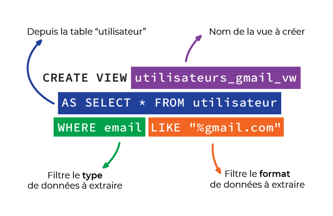
La commande CREATE VIEW
Je viens de créer la vue “utilisateurs_gmail_vw”.
Cette dernière s’utilise désormais comme une table.
Ainsi, pour récupérer les utilisateurs avec une adresse Gmail, plus besoin d’écrire ma requête compliquée !
Je n’ai plus qu’à écrire :
SELECT * FROM utilisateurs_gmail_vw;
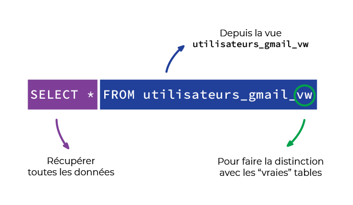
Utilisation de la commande CREATION VIEW avec SELECT * FROM
La convention chez les utilisateurs de SQL est de toujours préfixer le nom d’une vue avec “_vw”, pour la distinguer des “vraies” tables.
Le plus utile avec cela, c’est que la vue se comporte comme une vraie table.
Vous pouvez ainsi réappliquer d’autres commandes SQL sur cette dernière.
Par exemple : afficher les utilisateurs dont l’adresse e-mail est une adresse Gmail ET dont le prénom contient la lettre “m” :
SELECT * FROM utilisateurs_gmail_vw WHERE prenom LIKE "%m%";
Grâce aux vues, vous pouvez “raccourcir” des requêtes SQL complexes et rébarbatives, vous permettant d’aller encore plus loin dans vos analyses !
À vous de jouer !
Essayez à présent par vous-même la création d'une vue.
Créez une vue reprenant notre liste des aliments non bio, classés par contenance en protéines (de manière décroissante).
CREATE VIEW aliments_non_bio_vw AS SELECT * FROM aliment WHERE bio = false ORDER BY proteines DESC;
En résumé
Vous avez appris à effectuer des opérations mathématiques simples avec des mots clés comme COUNT ou AVG.
Vous savez sauvegarder des requêtes avec CREATE VIEW
3.3 - Implémentez des relations entre vos données grâce à JOIN -
Les bases de données SQL sont dites de type “relationnel”.
Cela sous-entend que leur force réside sur leur capacité à relier plusieurs types de données entre elles.
Pour l’instant, vous avez utilisé de la donnée sans relations.
Par exemple, pour récupérer ou mettre à jour un utilisateur ou un aliment.
Or, si vous reprenez l’exemple de Foodly, l’application doit stocker les aliments qu’un utilisateur a scannés.
Pour ce faire, il faut stocker les relations entre ces mêmes utilisateurs et certains aliments.
Nous verrons comment mettre en place de telles relations dans la partie 4.
Mais en attendant, voyons comment récupérer des objets selon les relations qu’ils ont entre eux.
Extrayez des informations via une relation 1 à plusieurs
Beaucoup d’utilisateurs vont utiliser Foodly, et ce, dans plusieurs pays.
Afin de pouvoir s’adapter à chacun, l’application va devoir stocker la langue préférée de chaque utilisateur.
Pour ce faire, la table “langue” a été rajoutée à la base de données Foodly que vous avez téléchargée au début de cette partie.
Chaque utilisateur est relié à une langue.
Et chaque langue peut être reliée à plusieurs utilisateurs.
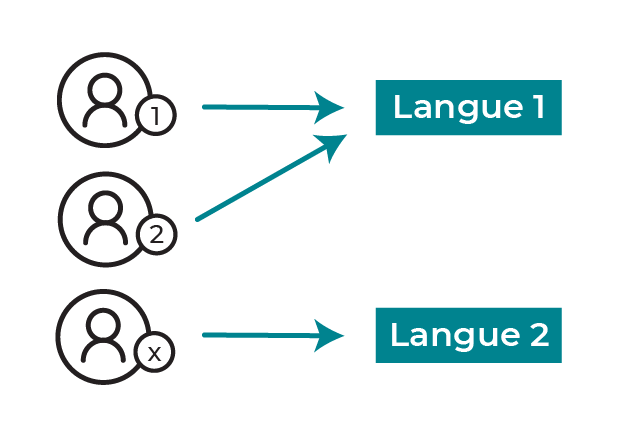
La relation un à plusieurs entre les utilisateurs et les langues
On parle alors d’une relation 1 à plusieurs entre utilisateur et langue (one-to-many, en anglais).
Pour matérialiser une telle relation dans une base SQL telle que MySQL, on suit un principe assez simple :
Dans ce cas spécifique, une langue est reliée à plusieurs utilisateurs.
On crée donc cet objet normalement, comme vous avez pu le faire précédemment.
INSERT INTO `langue` VALUES ('français');
Chaque utilisateur se voyant relié à une langue,
c’est l’utilisateur qui va devoir stocker l’id unique de la langue associée.
Par convention, on utilise comme nom de ce champ {nom de l’objet associé}_id (donc ici, langue_id ).
Les utilisateurs de la base de données mise à jour dans la partie 2 ont ainsi un champ langue_id , où est stocké l’id de la langue qu’ils souhaitent utiliser.
Par exemple, le premier utilisateur a comme langue_id 1, soit l’id du français dans la table des langues.
Imaginez désormais qu’on vous demande de ressortir toutes les langues utilisées par les 10 premiers utilisateurs, ou tous les utilisateurs ayant configuré Foodly en anglais.
Il existe une commande qui est justement là pour régler ce genre de problème.
La commande JOIN.
Grâce à cette commande, vous allez pouvoir expliquer à MySQL comment joindre deux tables selon un identifiant qu’elles ont en commun.
Partons du principe que :
la langue_id du premier utilisateur est le français ;
l’id du français est 1.
Vous allez spécifier à MySQL de joindre les tables “utilisateur” et “langue” en lui précisant que l’id de langue et langue_id de l’utilisateur doivent êtres égaux !
Prenons un exemple.
Regardons tous les utilisateurs avec les langues qui leur sont associées.
Tapez cette commande dans votre terminal :
SELECT * FROM `utilisateur`
JOIN `langue`
ON `utilisateur`.`langue_id` = `langue`.`id`;
Que s’est-il passé dans cette commande ?
Nous avons demandé à MySQL de sélectionner tous les utilisateurs. SELECT * FROM `utilisateur`
Auxquels nous voulons joindre les langues. JOIN `langue`
En précisant à MySQL de les relier, en considérant que l’id de la langue est stockée dans chaque utilisateur dans le champ langue_id. ON `utilisateur`.`langue_id` = `langue`.`id`
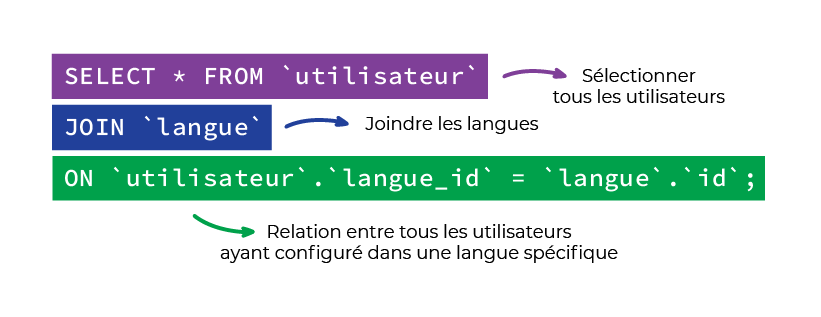
L'utilisation de la commande JOIN
Ici, vous avez utilisé la commande SQL pour lier la totalité d’une table (utilisateur) avec une autre (langue).
Mais on peut tout à fait limiter cette jointure à seulement quelques objets en particulier.
À vous de jouer !
Admettons que je vous demande de me donner tous les noms de famille des utilisateurs ayant sélectionné le français.
SELECT * FROM utilisateur
JOIN langue
ON utilisateur.langue_id = langue.id WHERE langue.nom = 'français';
Obtenez des informations complexes via une relation plusieurs à plusieurs
Reprenons ensemble l’idée première de l’application Foodly.
Cette dernière sert à des utilisateurs (comme vous et moi) à scanner des aliments.
Une fois ces aliments scannés, il serait plus qu’utile que la base de données les garde en mémoire,
afin que les utilisateurs puissent les retrouver par la suite (pour par exemple faire leur prochaine liste de courses).
Pour ce faire, il faudrait un moyen de stocker dans la BDD tous les aliments qui ont été scannés par un utilisateur précis.
Sachant que :
un même utilisateur peut stocker plusieurs aliments scannés ;
un aliment peut lui-même être scanné par plusieurs utilisateurs.
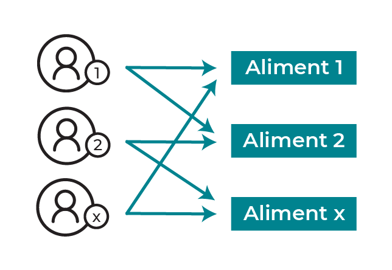
La relation un à plusieurs entre les utilisateurs et les aliments
On parle ici de relation plusieurs à plusieurs. Chaque objet d’une table pouvant être relié à plusieurs objets de l’autre table, et vice versa.
Or, tout ce que sait faire MySQL (et les bases de données SQL en général), c’est de stocker une valeur unique par champ. Il n’est pas possible par exemple de stocker plusieurs id d’aliments au sein d’un même utilisateur.
Par défaut, le SQL ne sait modéliser que des relations 1 à plusieurs.
Une relation plusieurs à plusieurs, c’est une multitude de relations 1 à plusieurs.
Regardez les tables présentes dans la BDD que vous avez téléchargées pour cette partie.
Elle contient une table appelée utilisateur_aliment
Celle-ci contient des utilisateur_id et des aliment_id .
Vous l’avez peut-être deviné : elle sert à stocker des relations entre un utilisateur et un aliment précis.
On appelle table de liaison ce genre de table.
Par convention, elle prend le nom {table1}_{table2} ,
et sert à relier les tables 1 et 2 qui y sont stockées,
en sauvegardant l’id d’un objet de la table 1, à l’id de l’objet de la table 2 correspondant.
En récupérant tous les objets présents dans cette base,
qui ne sont autres que des relations 1 à plusieurs vers utilisateur et aliment,
on peut reconstituer les relations plusieurs à plusieurs entre ces mêmes utilisateurs et aliments !
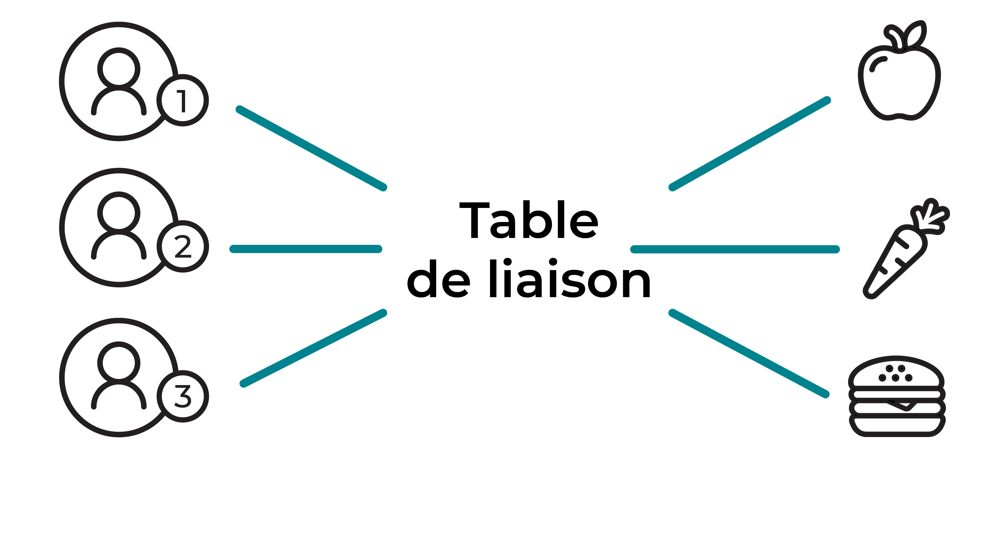
La table de liaison relie les utilisateurs aux aliments
On utilise aussi JOIN
Voici la commande pour relier tous les utilisateurs aux aliments qu’ils ont scannés :
SELECT * FROM utilisateur
JOIN utilisateur_aliment ON (utilisateur.id = utilisateur_aliment.utilisateur_id)
JOIN aliment ON (aliment.id = utilisateur_aliment.aliment_id);
Décomposons cette commande ensemble :
Nous avons demandé à MySQL de sélectionner tous les utilisateurs.
SELECT * FROM `utilisateur`
Auxquels nous voulons joindre la table utilisateur_aliment.
JOIN `utilisateur_aliment`
En précisant à MySQL de les relier en considérant
que l’id de l’utilisateur est stocké en tant que utilisateur_id
dans la table utilisateur_aliment.
ON (utilisateur.id = utilisateur_aliment.utilisateur_id)
À ce JOIN ,
on veut à nouveau lier de la donnée de la table aliment,
soit un nouveau JOIN.
JOIN `aliment`
Pour ce faire, on précise à MySQL que l’id de l’aliment
est stocké dans utilisateur_aliment
en tant que aliment_id.
ON (aliment.id = utilisateur_aliment.utilisateur_id)
À vous de jouer !
Admettons que vous souhaitiez voir tous les aliments sélectionnés par les utilisateurs dont l’adresse e-mail et une adresse Gmail.
SELECT * FROM utilisateurs_gmail_vw
JOIN utilisateur_aliment ON (utilisateurs_gmail_vw.id = utilisateur_aliment.utilisateur_id)
JOIN aliment ON (aliment.id = utilisateur_aliment.aliment_id);
En résumé
Vous savez désormais joindre plusieurs objets entre eux grâce au mot clé JOIN.
Et ce, que ce soit pour une relation un à plusieurs
ou pour une relation plusieurs à plusieurs grâce à une table de liaison.
4.1 - Modifiez la structure d’un objet avec ALTER TABLE -
Ajoutez ou supprimez un champ
Ajoutez un champ aux aliments
Le dernier rapport sur l’utilisation de Foodly vient de tomber.
Dans celui-ci, les utilisateurs ont pu voter pour les améliorations qu’ils souhaiteraient voir apparaître dans l’application.
La plus demandée était celle de voir la contenance en vitamines de chaque aliment.
Sachant cela, l’équipe de Foodly organise une réunion concernant l’implémentation d’une telle fonctionnalité.
Le design est prêt, les développeurs ont codé l’interface, mais il manque une chose cruciale pour récupérer la contenance en vitamines dans l’application : l’ajout de cette donnée dans la BDD.
Prenons l’exemple de la vitamine C.
Cette colonne n’apparaît nulle part dans le schéma de la table aliment.
Il nous faut la créer.
De la même manière que vous l’avez fait lors de la première partie, il faudra spécifier son type à MySQL.
Pour ce faire, utilisez la commande ALTER TABLE.
Voyons à quoi ressemble la commande SQL pour rajouter cette colonne, puis décortiquons-la ensemble :
ALTER TABLE aliment ADD vitamines_c FLOAT;
Ici, on signale à MySQL :
de modifier la structure d’une table avec ALTER TABLE;
quelle table modifier (ici "aliment”) ;
que la modification va faire ajouter une colonne avec ADD;
le nom de cette nouvelle colonne (ici “vitamines_c”) ;
enfin, le type de la colonne (ici,FLOAT, car les vitamines sont stockées usuellement en mg/100g, valeur décimale).
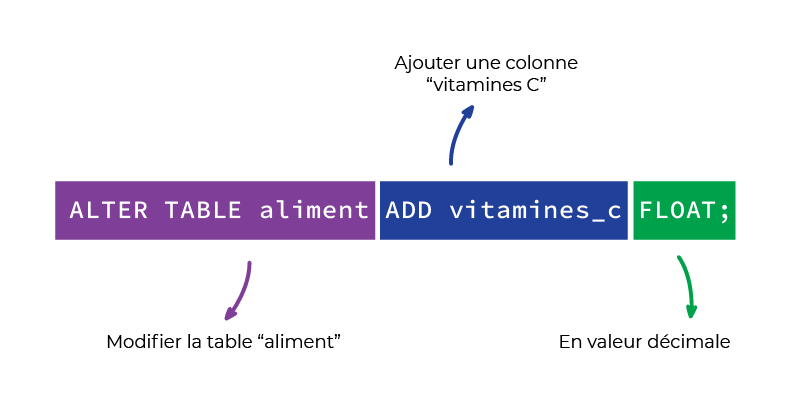
La commande ALTER TABLE
À noter que le type n’est parfois pas seul.
On peut aussi (comme dans la partie 1), mentionner à MySQL qu’on rajoute une colonne qui est :
une clé primaire (PRIMARY KEY) ;
avec une valeur par défaut (DEFAULT valeur_par_défaut) ;
non nulle (NOT NULL).
Auquel cas il faudra préciser une valeur par défaut,
MySQL créant la colonne avec la valeur “NULL” pour tous les objets existants dans cette table ;
À vous de jouer !
Admettons que l’on souhaite rajouter une colonne à la table “langue”
Cette colonne, c’est le code ISO des langues (par exemple : “fr-fr” pour le Français de métropole).
ALTER TABLE langue ADD code VARCHAR(100);
Supprimez un champ aux aliments
Le management de chez Foodly nous mentionne d’autres changements à effectuer sur l’application, qui impliquent la BDD.
Les utilisateurs de Foodly n’utilisent que très rarement la fonctionnalité pour savoir si un aliment est bio ou non.
Les développeurs, dans leur volonté de toujours diminuer la dette technique (à savoir, le code à maintenir), souhaitent retirer l’affichage bio de la fiche des aliments sur Foodly.
En tant que gestionnaire de la BDD, vous pensez qu’il serait pratique de faire de même de votre côté, pour éviter de maintenir un champ qui ne sera plus mis à jour.
Pour ce faire, rien de plus simple : supprimons la colonne “bio” de la table “aliment” avec DROP.
Voici la commande SQL pour le faire :
ALTER TABLE aliment DROP bio;
Décomposons cette commande ensemble :
On modifie toujours la structure d’une table avecALTER TABLE.
On lui signale à nouveau quelle table modifier (ici, “aliment”).
On lui indique que la modification va supprimer une colonne avecDROP.
On mentionne le nom de la colonne à supprimer (ici, “bio”).
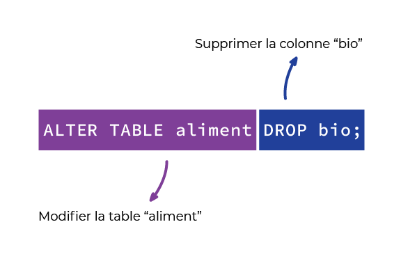
Utilisation de DROP
Il faut néanmoins faire attention lorsqu’on utilise cette commande.
Une fois la colonne supprimée, celle-ci est définitivement détruite et ne peut plus être récupérée.
Vous perdez l’information pour tous les objets présents en base.
À utiliser avec parcimonie !
À vous de jouer !
Maintenant, admettons que le service légal de Foodly vous dise que stocker des noms de famille va à l’encontre des conditions de protection des données des utilisateurs.
Comment feriez-vous pour supprimer les noms de famille ?
ALTER TABLE utilisateur DROP nom;
Modifiez un champ existant
Modifiez un champ des aliments
Le management de Foodly revient encore une fois vers vous !
Après avoir regardé des utilisateurs se servir de Foodly, ils se sont rendu compte que les utilisateurs souhaiteraient pouvoir filtrer les aliments selon leurs apports calorifiques avec plus de précision.
Pour ce faire, les développeurs vous indiquent qu’ils vont devoir comparer les calories de deux aliments entre eux, et ce, à la virgule près.
Or, les calories sont actuellement stockées sous forme d’entiers (sans décimales, du coup).
Voici la commande pour effectuer cette opération :
ALTER TABLE aliment MODIFY calories FLOAT;
Analysons cette commande :
On modifie toujours la structure d’une table avec ALTER TABLE.
On lui signale à nouveau quelle table modifier (ici, “aliment”).
On lui indique que la modification va modifier le type d’une colonne avec MODIFY.
On mentionne le nom de la colonne à modifier (ici, “calories”).
On indique le nouveau type de la colonne (ici,FLOAT).
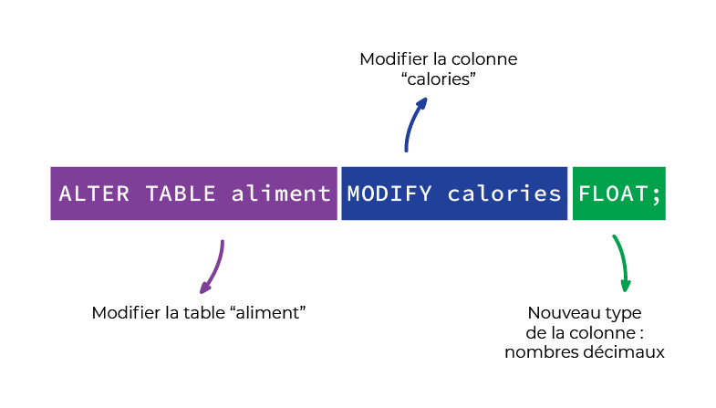
L'utilisation de FLOAT
À vous de jouer !
Les développeurs viennent vous voir affolés !
Certains utilisateurs ne peuvent pas s’inscrire car leur email dépasse les 255 caractères.
Pourriez-vous augmenter la limite à 500 ?
ALTER TABLE utilisateur MODIFY email varchar(500);
Renommez un champ des aliments
Ce coup-ci, c’est la designer de Foodly qui revient vers vous : les utilisateurs sont perturbés…
Pour chaque aliment, la valeur en protéines, vitamines, matières grasses est mentionnée au pluriel.
Alors que les sucres, eux, sont mentionnés au singulier.
Ce qui perturbe la compréhension des aliments par les utilisateurs.
Comment renommer cette colonne dans la BDD ?
Voici la commande à effectuer :
ALTER TABLE aliment CHANGE sucre sucres FLOAT;
Voici les explications de cette commande :
On modifie toujours la structure d’une table avec ALTER TABLE.
On lui signale à nouveau quelle table modifier (ici, “aliment”).
On lui indique que la modification va modifier le nom d’une colonne avec CHANGE.
On mentionne le nom de la colonne à renommer, ainsi que son nouveau nom (ici, sucre devient sucres).
On indique le nouveau type de la colonne (ici,FLOAT).
C’est une spécificité propre à MySQL : pour renommer une colonne, il faut aussi indiquer son type.
Ce qui n’est pas nécessaire si vous utilisez un autre SGBD.
Cela permet de modifier à la fois le nom et le type d’une colonne dans une seule commande.
Et ce, même si vous ne souhaitez pas le modifier(réutilisez alors le même type)
À vous de jouer !
A présent, les développeurs trouvent que le nom code dans la table des langues est peu explicite.
Ils aimeraient qu’elle s’appelle code_pays.
ALTER TABLE langue CHANGE code code_pays varchar(100);
En résumé
Vous savez que toute modification de la structure d’un objet s’effectue avec une commande ALTER TABLE.
Pour ajouter un champ à un objet, il vous faut utiliser le mot clé ADD.
Pour supprimer un champ, le mot clé est DROP.
Pour modifier un champ, le mot clé est MODIFY pour en modifier la structure, CHANGE pour le renommer.
Voyons dans ce chapitre comment ajouter une relation un à plusieurs, en créant notre table "famille".
Puis retrouvez dans le chapitre suivant comment ajouter une relation plusieurs à plusieurs avec la création de la table "lieu".
Ajoutez une nouvelle table "famille"
Nous avons obtenu une nouvelle demande d’amélioration de l’application de la part des utilisateurs !
Ces derniers aimeraient pouvoir trier les aliments selon leur "famille".
Par exemple, regrouper ensemble les fruits, les légumes, les viandes, etc.
Les développeurs pensent qu’il serait utile de séparer ces familles des aliments.
En effet, ils pensent que les familles d’aliments pourront être utilisées de manière indépendante, pas forcément uniquement sur les fiches des aliments.
Par exemple, pour effectuer un résumé de la consommation en fruits ou légumes d’une personne sur un mois, ou la répartition au sein de ses courses.
Pour cela, il faudrait que les familles d’aliments soient sur une table distincte de celle des aliments !
Maintenant que vous savez joindre plusieurs tables entre elles, il est temps de construire une telle relation entre tables.
Avant de pouvoir relier les aliments à leur famille, il faut d’abord… eh bien, créer la table famille !
Pour l’instant, un objet de type famille ne devra contenir que le nom de cette famille (“fruit”, “viande”, etc.).
CREATE TABLE famille (
id INT NOT NULL AUTO_INCREMENT PRIMARY KEY,
nom VARCHAR(100) NOT NULL
);
Maintenant que cette table est créée, insérons un objet dans celle-ci.
Disons, l’objet qui va représenter les légumes.
INSERT INTO famille (`nom`) VALUES ('légumes');
Et voilà, vous voici en possession d’une nouvelle table “famille” qui dispose d’un objet “légumes”.
Ajoutez la relation entre famille et aliment
Une des choses à déterminer lors de l’ajout d’une relation, c’est de savoir si :
c’est une relation un à plusieurs ;
ou une relation plusieurs à plusieurs.
Ici, un aliment peut avoir une seule famille, mais une famille peut être présente sur plusieurs aliments.
Par exemple, une poire et une pomme font partie de la famille “fruits”.
Il s’agit donc d’une relation un à plusieurs.
Dans le cadre d’une telle relation, c’est l’objet qui se trouve du côté “plusieurs” de la relation qui va être modifié, ici les aliments.
On va devoir y stocker l’id de l’objet “un” associé, par exemple “fruits”.
Ici, les aliments vont donc devoir être mis à jour pour y stocker une référence à leur famille.
Cette référence, par convention, sera l’id de la famille.
Voici les étapes que l’on va suivre :
Ajout du champ famille_id sur les aliments.
Modification de ce champ pour signaler à MySQL que c’est une référence à la table famille.
Modification d’un objet pour y stocker une relation.
Ajout du champ famille_id sur les aliments.
ALTER TABLE aliment
ADD famille_id INT NOT NULL;
Il faut qu’on indique à MySQL que ce champ est une référence à une autre table,
en lui précisant quel champ de cette autre table on référence.
Pour modifier le champ famille_id, on utilise la commande :
ALTER TABLE aliment
ADD FOREIGN KEY (famille_id) REFERENCES famille (id)
ON DELETE CASCADE;
Voyons ensemble ce que cette commande signifie :
On signale à MySQL qu’on souhaite modifier la table “aliment”, pour y ajouter une colonne
(enfin, plutôt y ajouter une contrainte, dans ce cas précis).
On dit à MySQL que la colonne famille_id est une clé étrangère (foreign key en anglais),
soit une référence à une colonne d’une autre table (ici, avec la partie FOREIGN KEY (famille_id) ).
On indique ensuite ce à quoi cette clé fait référence.
Soit, dans notre cas, la colonne “id” de la table “famille” (soit la commande REFERENCES famille(id) ).
Enfin, sûrement la partie la plus obscure pour vous, on indique à MySQL le comportement à adopter en cas de suppression de l’objet “unique” (ici, la “famille”).
Admettons que je vienne de créer ma famille “fruits”, et qu’elle soit reliée à mes objets “pomme” et “poire”.
Que se passe-t-il si je supprime la famille “fruits” ?
Eh bien, MySQL a besoin de le savoir.
Pour cela, on lui indique via la commandeON DELETE.
Cette dernière peut prendre une option parmi celles-ci :
RESTRICT ou NO ACTION : MySQL va empêcher la suppression tant que “fruits” est référencé sur au moins un objet “aliment”.
SET NULL: MySQL va autoriser la suppression de “fruits”, et remplacer “famille_id” sur “pomme” et “poire” par la valeur NULL.
CASCADE l’option la plus courante, mais la plus dangereuse.
Ici, MySQL va supprimer “poire” et “pomme” en même temps que “fruits” (il va donc supprimer tous les objets reliés).
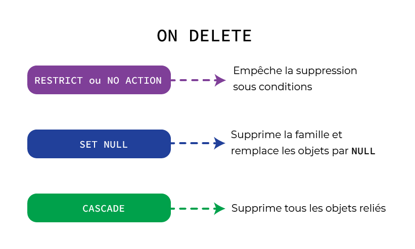
Actions de la commande ON DELETE
Voilà, MySQL sait que “famille_id” est une référence à l’id de la table famille !
Reste maintenant à mettre à jour vos aliments !
Ajouter la relation de l’objet “haricots verts” vers la famille “légumes”.
Voici la commande :
UPDATE `aliment` SET `famille_id` = '1' WHERE `nom` = 'haricots verts';
N’oubliez pas, “légumes” ayant été ajouté en premier à la table “famille”, il a l’id numéro 1.
Pour vérifier que cela a bien fonctionné, vous pouvez sélectionner les haricots verts avec leur famille grâce à un JOIN.
SELECT * FROM aliment
JOIN famille ON aliment.famille_id = famille.id
WHERE aliment.nom = "haricots verts";
Grâce à cette commande, vous verrez apparaître un tableau récapitulatif, où la famille de “haricots verts” est bien “légumes”.
Il ne vous reste plus qu’à ajouter les autres familles vous-même, rajouter sa famille à chaque aliment, et le tour est joué !
À vous de jouer !
Faisons un petit exercice :
On souhaite rajouter les réductions disponibles sur les aliments.
Une réduction pouvant être la même pour plusieurs aliments mais chaque aliment pouvant n’avoir qu’une seule réduction, il s’agit d’une relation un à plusieurs.
Les réductions sont uniquement constituées d’un champ “valeur”, qui va contenir la réduction au format texte.
Comment feriez-vous pour créer cette table et la lier aux aliments ?
Creation de la table "reduction"
CREATE TABLE reduction
(id INT NOT NULL AUTO_INCREMENT PRIMARY KEY,
valeur VARCHAR(100) NOT NULL).
Creation des valeurs
INSERT INTO reduction (valeur) VALUES ('-30%');
INSERT INTO reduction (valeur) VALUES ('-50%');
Ajout de la colonne reduction_id
ALTER TABLE aliment ADD reduction_id INT;
Ajout de la liaison des tables
ALTER TABLE aliment
ADD FOREIGN KEY (reduction_id)
REFERENCES reduction (id);
ON DELETE SET NULL;
Affecter une reduction de 50% à l'aliment dont l'id=1
UPDATE aliment SET reduction_id=1 WHERE id=1;
Utilisation de JOIN
SELECT * from aliment JOIN reduction ON aliment.reduction_id = reduction.id WHERE aliment.id=1;
En résumé
Vous savez ajouter une relation un à plusieurs entre deux objets en ajoutant à l’objet A un champ qui contiendra l’id (ou clé primaire) de l’objet B.
4.3 - Ajoutez une relation plusieurs à plusieurs -
Souvenez-vous on aimerait ensuite ajouter le type de magasin où sont présents les aliments.
Un même aliment pouvant être présent dans plusieurs lieux, nous allons créer une relation plusieurs à plusieurs.
Ajoutez une nouvelle table “lieu”
La dernière demande de mise à jour des utilisateurs est arrivée !
Ces derniers réclament une chose en théorie simple : pouvoir visualiser dans l’application de Foodly dans quel magasin sont disponibles leurs aliments préférés.
Par exemple, savoir si leur jambon de prédilection est disponible aussi bien à Carrefour que chez Leclerc.
Les développeurs se sont de nouveau regroupés : il va falloir stocker les lieux de vente dans la BDD.
Un lieu pouvant vendre plusieurs aliments, et ces mêmes aliments pouvant être vendus dans plusieurs lieux, vous allez devoir créer une relation plusieurs à plusieurs.
Mais avant toute chose, il vous faut créer la nouvelle table des lieux de vente (que nous allons sobrement appeler “lieu”).
Un lieu de vente, c’est :
un nom (exemple : Carrefour City) ;
un type (exemple : supermarché).
CREATE TABLE lieu (
id INT NOT NULL AUTO_INCREMENT PRIMARY KEY,
nom VARCHAR(100) NOT NULL,
type VARCHAR(100) NOT NULL
);
insérons un lieu dans cette dernière, partons sur un simple Carrefour City
INSERT INTO `lieu` (`nom`, `type`) VALUES ('Carrefour City', 'supermarché');
La nouvelle table est créée, et un objet y a été inséré.
Passons maintenant aux choses sérieuses en créant la relation plusieurs à plusieurs avec les aliments.
Ajoutez la table de liaison
Les aliments vont avoir des relations un à plusieurs avec la table de liaison.
Les lieux, eux aussi, vont disposer de telles relations avec cette table.
Et c’est en reliant ces deux tables via cette table de liaison que vous allez pouvoir ressortir les relations entre lieux et aliments.
Pour ce faire, une table de liaison doit être créée.
Par convention, elle doit toujours avoir cette forme :
Son nom doit regrouper les deux tables qu’elle relie, sous la forme : “table1_table2”.
Elle n’a que deux champs à stocker : table1_id et table2_id.
Soit les id de chaque objet qu’elle relie.
Ces id sont donc des références aux id des autres tables.
Sa clé primaire n’est autre que l’association de ces deux id (association qui doit toujours être unique).
Dans notre cas, cela donne ceci en commande SQL :
CREATE TABLE aliment_lieu (
aliment_id INT NOT NULL,
lieu_id INT NOT NULL,
FOREIGN KEY (aliment_id) REFERENCES aliment (id) ON DELETE RESTRICT ON UPDATE CASCADE,
FOREIGN KEY (lieu_id) REFERENCES lieu (id) ON DELETE RESTRICT ON UPDATE CASCADE,
PRIMARY KEY (aliment_id, lieu_id)
);
Décortiquons cette commande ensemble :
On crée une nouvelle table avec le nom des deux tables qu’elle relie (ici la table <“aliment”/strong>, ainsi que la table “lieu”).
On ajoute les références aux id de ces deux tables :
aliment_id, qui est une référence aux id de la table “aliment” ;
lieu_id, qui est une référence aux id de la table “lieu” ;
on signale à MySQL comment mettre à jour la BDD en cas de suppression ou de mise à jour d’un objet de “aliment_lieu”.
On explique à MySQL que l’id de cette table sera l’association entre les deux id précédents.
ON UPDATE est le comportement que doit adopter MySQL en cas de mise à jour d’un champ.
Il peut avoir les mêmes options que ON DELETE
Actions de la commande ON UPDATE
Admettons que le “oeuf” présent dans notre BDD soit vendu chez “Carrefour City”.
Il vous faudrait alors créer un objet dans “aliment_lieu”, avec l’id de “oeuf” ainsi que l’id de “Carrefour City”.
Retrouvez ces id dans votre BDD et écrivez la commande SQL pour créer cette relation.
Sachant que 3 est l’id de “oeuf”, 1 celui du “Carrefour City”, cela donne ça :
INSERT INTO `aliment_lieu` (`aliment_id`, `lieu_id`) VALUES ('3', '1');
Le fait que le blanc de dinde soit vendu à Carrefour est stocké en base de données.
Pour retrouver cette relation, il vous faudra faire un double JOIN.
SELECT * FROM aliment
JOIN aliment_lieu ON aliment.id = aliment_lieu.aliment_id
JOIN lieu ON lieu.id = aliment_lieu.lieu_id
WHERE aliment.id = 3;
Ici, on joint la table aliment à la table lieu via la table de liaison, comme si c’était une simple relation un à plusieurs répétée.
À vous de jouer !
On souhaite savoir quels sont les appareils sur lesquels les utilisateurs ont installé Foodly (par exemple : mac, pc, android, etc).
Un utilisateur peut utiliser Foodly sur plusieurs appareils, et un même appareil peut être commun à plusieurs utilisateurs.
Il s’agit d’une relation plusieurs à plusieurs
Un appareil est uniquement constitué de son type au format texte.
Comment feriez-vous pour créer cette table et la lier aux utilisateurs ?
Creation de la table "appareil"
CREATE TABLE appareil (
id INT NOT NULL AUTO_INCREMENT PRIMARY KEY,
type VARCHAR(100) NOT NULL);
Ajout d'appareil dans la table "appareil"
INSERT INTO appareil (type) VALUES ('Iphone');
INSERT INTO appareil (type) VALUES ('Android');
INSERT INTO appareil (type) VALUES ('PC');
INSERT INTO appareil (type) VALUES ('MAC');
Creation de la table de liaison utilisateur_appareil
CREATE TABLE utilisateur_appareil (
utilisateur_id INT NOT NULL,
appareil_id INT NOT NULL,
FOREIGN KEY (utilisateur_id) REFERENCES utilisateur (id) ON DELETE RESTRICT ON UPDATE CASCADE,
FOREIGN KEY (appareil_id) REFERENCES appareil (id) ON DELETE RESTRICT ON UPDATE CASCADE,
PRIMARY KEY (utilisateur_id, appareil_id)
)
Lier le premier utilisateur (id=1) à ses appareils
INSERT INTO utilisateur_appareil (utilisateur_id, appareil_id)
VALUES
(1,2);
INSERT INTO utilisateur_appareil (utilisateur_id, appareil_id)
VALUES
(1,4);
Verification du lien
SELECT * FROM utilisateur
JOIN utilisateur_appareil ON utilisateur.id = utilisateur_appareil.utilisateur_id
JOIN appareil ON appareil.id = utilisateur_appareil.appareil_id
WHERE utilisateur.id = 1;
En résumé
Vous savez ajouter une relation plusieurs à plusieurs entre deux objets en créant une table de liaison qui contiendra les id de chaque objet.